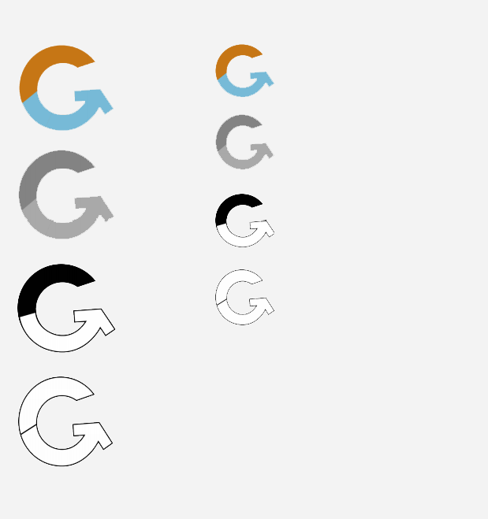
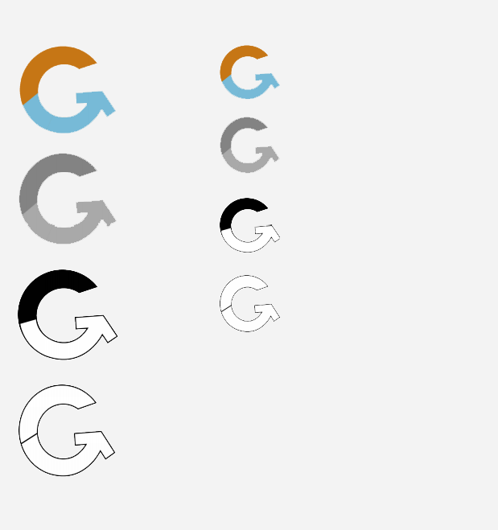

2020
La refonte de l'identité visuelle d'Indiglu, un site permettant de calculer le nombre de glucide dans chaque repas pour les personnes notamment atteintes de diabète, a été réalisé dans le cadre de mes études. Nous avions pour but de créer une nouvelle identité visuelle au site en lui créant un nouveau logo et et faire une maquette graphique pour la page d'accueil. Il nous a été demandé de faire un dossier pour la charte graphique pour expliquer chacun de nos choix.

Avant de débuter la recherche graphique, j'ai analysé les applications et sites concurrents afin d'avoir une idée plus global des attentes des utilisateurs. J'ai pu ainsi comprendre ce qui fonctionnait pour rendre l'expérience utilisateurs intéressante. Ensuite, j'ai idenfié ma cible principale et secondaire afin de mieux cerner leurs attentes et approches du numérique. J'ai ainsi crée deux persona, et me suis basée sur ces derniers pour construire l'identité visuelle et surtout la maquette.
Dans cette deuxième phase, j'ai commencé les recherches graphiques pour un nouveau logo. Afin de sortir le plus d'idées possible, j'ai dessiner tout ce qui me venait en tête, à l'image d'un brainstorming, pour explorer le plus de piste possible. La plupart de mes idées tournent autour de l'équilibre bien qu'au départ je m'orientais plus vers l'idée d'un fruit pour rappeler la nourriture saine.
L'idée d'une jauge, de niveaux, d'un plus et d'un moins pour rappeler le thème su site qui est de calculer le niveau de glucose, s'est imposé dans ce processus de création. Je me suis ensuite dis qu'il fallait également rappeler le nom du site, c'est pour quoi j'ai pensé utiliser la lettre G pour rappeler le nom du site et le glucose.
*
Après mon brainstorming sur le logo, j'ai sélectionné une idée qui me semblait intéressante à explorer. Toujours en utilisant la forme du G pour rappeler le thème du Glucose sur le site, j'ai modifier sa barre pour donner l'illusion d'une flèche. Ainsi La forme ronde rappelle un diagramme et représente ainsi les taux de glucose et autres nutriments se trouvant dans un repas. La forme ronde illustre également l’assiette dans laquelle le repas va être consommé. La flèche symbolise le recommencement puisque l’utilisation du calculateur est une action quotidienne pour ceux qui en ont besoin.
*
Pour finir, je me suis décidé sur le coloris que j'allais utiliser. J'ai choisit le orange et le bleu. Le bleu est une couleur apaisante qui touche toutes les générations, comme le diabète. Elle rappelle la couleur de l’eau et inspire la fraîcheur et la sagesse. Le orange est une couleur dynamique qu’on utilise pour avertir d’un danger. Elle attire l’oeil et inssufle la bonne humeur. En utilisant ces deux couleurs, on voit le passage entre un taux moyen et un bon taux de glucose dans un repas. J'ai également crée des déclinaisons en gris, en noir et blanc et sans couleur. J'ai aussi décliner les logos avec et sans le nom pour qu'ils soient lisibles de loin
 

Dernière étape du processus de création de notre application : le prototypage. Nous avons utilisé la couleur tonique rouge sur tous les icônes où une action peut être faite. Les boutons sont colorés avec un dégradé de bleu que nous trouvions percutant et dynamique. Quant à la typographie, nous avons utilisé du Made Tommy Soft en medium sur tous les titres. Il s'agit d'une police simple à lire mais percutante. Quant aux textes, nous avons utilisé du Quicksand pour faciliter la lecture et garder une page dans son ensemble épurée. Nous avons laissé le plus d'espace possible pour que l'utilisateur puisse capter toutes les informations en un clin d'oeil et trouver puis réserver ses trajets le plus simplement possible.